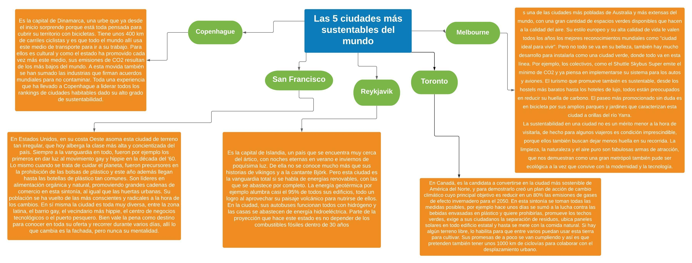
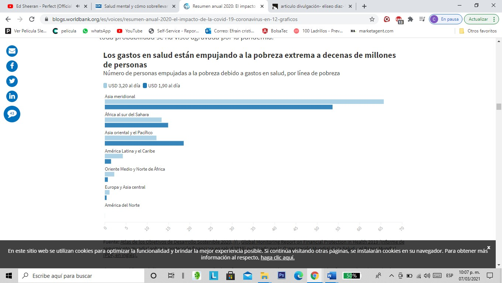
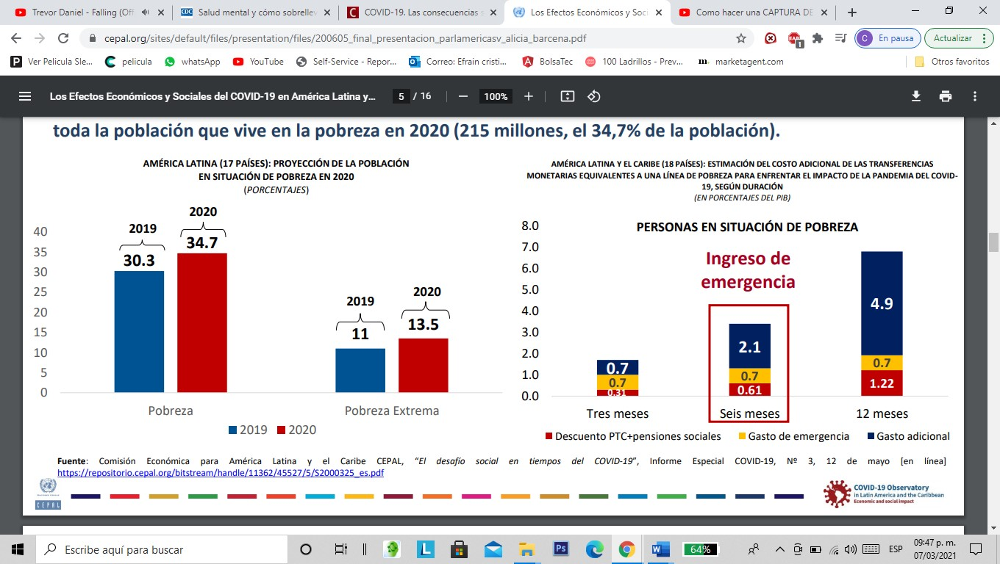
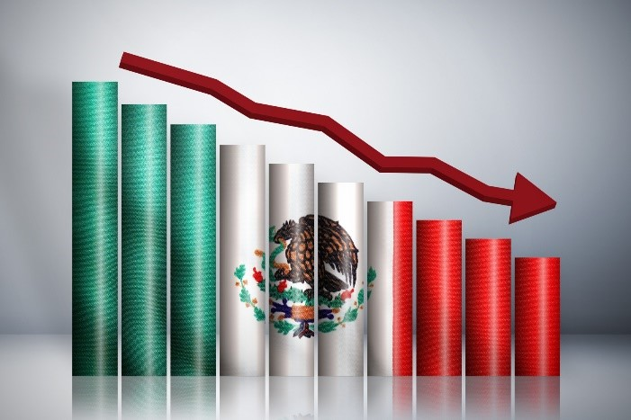
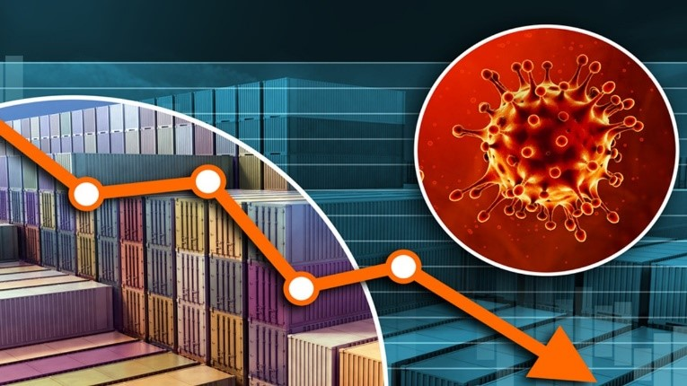

Cambio climático, desarrollo sustentable y el surgimiento de nuevas enfermedades (COVID-19).
IndiceEcologia
Ecologia

Si tenemos en cuenta que los edificios son tan contaminantes en las ciudades, se deberían tomar medidas para paliar sus efectos negativos. No obstante, hay muchas otras medidas a tener en cuenta, ya que el óxido de nitrógeno o las partículas en suspensión -que son las responsables de la mala imagen de los cielos de las ciudades- suelen originarse debido a los humos que se emiten en las ciudades: -Fomentar el uso del transporte público. Muchos gobiernos locales apuestan principalmente por ello, con el uso del tren o del metro como mejores alternativas al viaje en transporte privado. Si se mejora la red de transporte público, con mayores pasos de frecuencia, se mejora la emisión de gases de efecto invernadero. En el caso de los autobuses, es importante apostar por tecnologías eléctricas y de menor consumo. El biogas es también una buena alternativa. -Restricción del tráfico. Es una medida que va de la mano con la anterior. La primera medida es siempre la apuesta por un transporte público atractivo y que suponga una alternativa real. Y en el caso de que no se pueda solventar el uso del coche en algunos casos, una medida que suele ayudar notablemente es la de prohibir la circulación a vehículos con solo una persona. Otras medidas mucho más incisivas son las de limitar la velocidad en algunas zonas específicas o la total prohibición del uso del coche dentro de la ciudad. Madrid, por ejemplo, ha tomado esta medida. -Instalación de puntos de recarga para coches eléctricos. Para poder aumentar el interés por el coche eléctrico y reducir la contaminación en las ciudades al emitir menos gases contaminantes, es imprescindible que los usuarios tengan lugares donde recargar el vehículo. -Las medidas en relación a la reutilización de recursos y el reciclaje son también imprescindibles. Así, también se limita la contaminación que parte de los vertederos y de las fábricas. Hay que tener en cuenta que el proceso de eliminación en un vertedero es notablemente contaminante, ya que los gases resultantes de la descomposición -como el metano- son altamente contaminantes y aumentan el efecto invernadero. -Uso de energías renovables. La recogida de agua de lluvia y también el uso de energía eólica o de placas solares puede ayudar y mucho en las ciudades. En Portugal se planteó si, en un futuro cercano, se podría depender exclusivamente de las energías renovables. Además de todo ello, como hemos dicho el mayor contaminante en las ciudades es el conjunto de edificios. Es imprescindible que, en los centros urbanos, podamos contar con medidas de concienciación para un uso responsable de la energía y de la climatización.ir al inicio
Filosofia
A lo largo de la historia el ser humano ah Sido testigo del gran impacto negativo que a tenido hacia el planeta tierra, la mayoría de estos problemas es porque el mismo a sigo quien los a credo para satisfacer sus necesidades ya sean de primera necesidad o simplemente unos caprichos para que tengamos una vida más cómoda. Con tanto capricho que los humanos han ido teniendo hemos descuidado el cuidado de nuestro planeta ya que solo no las pasamos contaminando y nadie se a preocupado por ir cuidando el planeta ya sea teniendo ideas más sustentables para el planeta o ya sea dejando los caprichos las personas has descuidado ese punto y solo piensan en satisfaces sus necesidades. Con tanto capricho que las personas han estado tratando de cumplirse siguen dañando el planeta sin siquiera saber los daños irreversibles que están dando a la tierra, cosas importantes como la naturaleza que es hermosa y maravillosa se están terminando por tanta contaminación hacia las zonas naturales, la fauna igual está siendo exterminada ya que estamos acabando con sus habitas ya que por tanto crecimiento de la población vamos ocupando más territorio haciendo que los animales ya no tengan espacios para vivir libremente y así causamos la extinción de especies. Pues EL SER HUMANO es el principal autor sobre las consecuencias en el planeta, buscamos echarle la culpa a nuestras autoridades, a los políticos, a los de alto poder sin hacernos las preguntas ¿Cómo podemos ayudar a nuestro planeta?, ¿Cómo el alto poder podría ayudar a la población a tener mejoras hacia el medio ambiente?. Ya que este es un problema de todos no es culpa de los altos mandos del país el problema es de la población ya que es ella la que sigue generando tanta contaminación y son ellos mismos los que deben de empezar a buscar soluciones. Si todos ponen su granito de arena podremos reparar el daño que a lo largo del tiempo hemos causado. Cada persona debería de tomarse un tiempo para reflexionar en el problema y que ella misma pueda pensar ¿Cuáles serían las acciones que podríamos aplicar día a día para mejorar nuestro planeta? Ya que para que vallamos arreglando los daños que hemos causado tenemos que empezar a cuidar el planeta.ir al inicio
Etimologia
*Epidemia--Hablamos de epidemia cuando hay un aumento en la prevalencia de una enfermedad en una comunidad, generalmente de forma repentina. *Reactivo--Es una sustancia o compuesto agregado a una mezcla para ver si ocurre una reacción. *Pandemia--Una pandemia se declara cuando una enfermedad se está extendiendo amplia y simultáneamente en múltiples áreas geográficas en todo el mundo. *Esputo--Saliva y mucosidad del tracto respiratorio que se pueden recolectar para la prueba, generalmente con un hisopo con una punta Q larga. *Asintomático--Una persona asintomática está infectada con el nuevo coronavirus, pero no tiene ninguno de los síntomas de COVID-19. *Aplanar la curva--Los epidemiólogos le llaman “aplanar la curva” a la idea de ralentizar la propagación de un virus para que menos personas necesiten buscar tratamiento al mismo tiempo. *Contención--Contener el virus significa cerrarle el paso para que no se propague tanto. *Mitigación--El objetivo de la mitigación es hacer lo posible para que no colapse el sistema de salud de un país. *Ventilador--Máquina que ingresa aire a los pulmones cuando los pacientes ya no pueden respirar bien y no tienen suficiente oxígeno para que su cuerpo siga funcionando. *Inmunidad--Cuando alguien enferma de COVID-19 y se recupera, como ocurre en la mayoría de los casos, es poco probable que se infecte de nuevo. *Prueba molecular--Por ahora, la prueba más precisa que existe para saber si alguien está infectado por el SARS-CoV-2. Detecta regiones genéticas específicas del virus. *serológica--En lugar de buscar al virus de manera directa, estas pruebas buscan anticuerpos que nuestro sistema inmune genera cuando entra en contacto con él. *Solidarity--Un esfuerzo internacional para tratar de encontrar un tratamiento efectivo contra el COVID-19. *Antibióticos--Son aquellos medicamentos eficaces contra las infecciones bacterianas. El coronavirus está causado por un virus, de modo que los antibióticos no sirven para luchar contra esta enfermedad. *Enfermedades zoonóticas--Son las enfermedades que pueden transmitirse entre animales y seres humanos y que son provocadas por virus, bacterias, parásitos y hongos. Son transmitidas por contagio directo con el animal enfermo y a través de algún fluido corporal como orina o saliva, o por la presencia de algún animal intermedio, como un mosquito en el caso de la malaria. *Epidemia--Es una enfermedad que se propaga en un país durante un tiempo determinado y que afecta simultáneamente a un gran número de personas. *Incubación--Se trata del tiempo comprendido entre la exposición a un organismo patogénico y el momento en que los síntomas aparecen por primera vez. En el caso del coronavirus, el tiempo de incubación es de 5,4 días de media, aunque se han observado casos en que el periodo de incubación es de hasta 14 días. *Infodemia--Este curioso término normalmente se emplea para referirse a la sobreabundancia de información (ya sea rigurosa o falsa) sobre un tema concreto, en este caso el coronavirus. *Jabón--El jabón es una solución soluble al agua compuesta por la combinación de un álcali unido a los ácidos del aceite u otro cuerpo graso. Al lavarnos las manos, el jabón disuelve la membrana lipídica que rodea el coronavirus, inactivándolo y evitando su poder infeccioso. *Análisis de ciclo de vida (LCA)--Herramienta metodológica empleada en identificar, cuantificar y valorar económicamente todos los costos internos y externos asociados a un ciclo productivo. *Administración de recursos--Economía de un recurso por parte de la persona física o jurídica propietaria o responsable de su gestión. *Aditivos--Sustancias agregadas a un producto y que inciden sobre alguna de sus características físico químicas. Existen diversos tipos, los del combustible y los alimentarios son los más conocidos. *Acidificación Incremento de la acidez. *Actividades de verificación--Inspección, ensayo y control relacionadas con la gestión ambiental. *Acidez de un agua residual--Se debe a la presencia de ciertos ácidos minerales y/u orgánicos, o a la hidrólisis sufrida por la existencia de sales de ácidos fuertes y bases débiles. Puede causar acción corrosiva en las instalaciones, por la acción del catión hidrógeno. *Agentes nocivos--Sustancias que liberadas en el medio ambiente en concentraciones inadecuadas significan un peligro para la biocenosis y el biotopo. *Agroecosistema--El agroecosistema o ‘ecosistema agrícola’ puede caracterizarse como un ecosistema sometido por el hombre a continuas modificaciones de sus componentes bióticos y abiótico, para la producción de alimentos y fibras. Estas modificaciones afectan prácticamente a todos los procesos estudiados por la ecología, y abarcan desde el comportamiento de los individuos, tanto de la flora como la fauna, y la dinámica de las poblaciones hasta la composición de las comunidades y los flujos de materia y energía. *Agropecuario--Relacionado con la agricultura y la ganadería. *Agua Subterránea--Agua existente debajo de la superficie terrestre ocupando los poros y huecos existentes en la componente sólida. *Alcalinidad de un agua residual--Cualidad de un agua debida a la presencia en la misma de carbonatos, bicarbonatos e hidróxidos. Cuando la alcalinidad se debe a la presencia de hidróxidos se habla de aguas cáusticas. *Antrópico--De origen humano, humanizado, opuesto a lo natural. Lo relativo (por estar asociado, influido, ser perteneciente o incluso contemporáneo) al hombre entendido como especie humana o ser humano *Aptitud de uso del suelo--Aptitud productiva del suelo hasta el límite en el cual puede producirse deterioro. Define su aptitud para el uso con fines agrícolas, pecuarios, forestales, paisajísticos, etc. *Aprovechamiento sostenible--Utilización de un recurso natural de modo que no altere las posibilidades de su uso en el futuro. *Área natural--Lugar físico o espacio en donde uno o más elementos naturales o de la naturaleza en su conjunto, no se encuentran alterados por las sociedades humanas *Área rural--Espacio donde predominan las actividades productivas del sector primario, conteniendo además las trazas de sistemas de transporte, instalaciones industriales, generación eléctrica, población y servicios, todos ellos dispersos. *Área urbana--Espacio cuyo suelo se destina preferentemente a construcciones, infraestructura y servicios, incluyendo espacios con vegetación destinados al esparcimiento. Constituyen el espacio territorial de mayor desarrollo de actividades secundarias y terciarias. *Aspecto ambiental--Carácter de las actividades, productos y servicios correspondientes a una organización en relación con el medio ambiente. *Accidente ambiental--Una catástrofe repentina o un accidente como resultado de factores naturales, tecnológicos o provocados por el hombre, o una combinación de los anteriores, que causa o amenaza con causar graves daños ambientales, así como la pérdida de vidas humanas y propiedades. Este término se usas cada vez más frecuentemente para indicar la relación entre los desastres y el medio ambiente, entendiendo esta como la relación entre los desastres, los la vida y salud de los seres humanos y el medio ambiente *Coronavirus--Es un tipo de virus común que causa enfermedades respiratorias. Hay muchas variedades de coronavirus *SARS-CoV-2--Es el nombre técnico del nuevo coronavirus, que pertenece a la misma familia que el virus que causa el SARS o síndrome respiratorio agudo severo *Cuarentena--Se utiliza para separar a las personas sanas que han estado expuestas a una enfermedad de la población en general, generalmente durante el período de incubación del virus. Para el nuevo coronavirus, este período suele ser de 14 días dado que es el período de incubación más largo observado para coronavirus similares. Si la persona no se enferma durante el período de cuarentena, es probable que sea seguro reanudar sus actividades regulares. La cuarentena puede ser autoimpuesta o puede ser ordenada por el gobierno. *Aislamiento--Las personas que enferman de COVID-19 están aisladas de las que están sanas. Esto suele suceder, por ejemplo, en un hospital, donde un equipo especializado hace que sea más fácil contener la propagación de una enfermedad contagiosa. *Distanciamiento social--Podría decirse que es la medida más importante para contener la propagación de un virus, especialmente cuando ha superado el rastreo de contacto. El distanciamiento social implica mantener intencionalmente la distancia de los demás para reducir la probabilidad de propagación de la enfermedad. Esto incluye evitar lugares públicos o de reunión como gimnasios, bares y restaurantes, y quedarse en casa tanto como sea posible. *Período de incubación--Hace referencia al tiempo transcurrido entre la exposición a un virus y la aparición de los primeros síntomas. El período de incubación del nuevo coronavirus, aunque aún se desconoce con total exactitud, se estima entre 2 y 14 días y los síntomas generalmente aparecen unos 5 días después de la exposición. *OMS--Organización Mundial de la Salud, con sede en Ginebra, Suiza. La OMS dirige la respuesta internacional a las amenazas mundiales para la salud *Colapso del sistema de salud--Cuando el número de pacientes enfermos de COVID-19 supera la capacidad de los hospitales y centros de salud para tratarlos, se habla de un colapso *Estado de alarma--En España, se declara en todo el país (o en parte de este) mediante un decreto del consejo de ministros en el caso de desgracias públicas como inundaciones, terremotos o crisis sanitarias como la que vivimos por culpa del coronavirus *Gel hidroalcohólico--Se trata de una solución líquida o en gel con un alto porcentaje de alcohol (entre el 60 y el 95 %) y que permite desinfectar de manera rápida la piel. *Paciente cero--Normalmente se les conoce como coronavirus, y es una subfamilia de virus perteneciente a la familia Coronaviridae. Son capaces de infectar mamíferos y aves produciendo una serie de enfermedades respiratorias y digestivas. *Orthocoronavirinae--Normalmente se les conoce como coronavirus, y es una subfamilia de virus perteneciente a la familia Coronaviridae. Son capaces de infectar mamíferos y aves produciendo una serie de enfermedades respiratorias y digestivas. *Pangolín--Los pangolines son un tipo de mamíferos placentarios cuyo orden contiene ocho especies vivas, todas pertenecientes al género Manis. Una investigación reciente comprobó que los pangolines pueden portar diversos coronavirus relacionados con el SARS-CoV-2. *Vacuna--Se trata de una sustancia compuesta por microorganismos atenuados o muertos que se introduce para estimular la formación de anticuerpos y conseguir inmunidad frente a ciertas enfermedades. *Zoonosis--Las enfermedades zoonóticas son aquellas que se transmiten por zoonosis de algunos animales a los humanos. Las zoonóticas representan el 60% de las enfermedades infecciosas conocidas. *inmunidad--La capacidad de resistir una infección por la acción del sistema inmune del cuerpo. *Contaminación--Deterioro o desequilibrio de los componentes habituales de las esferas física de la Tierra. *Coliforme--Bacteria que se encuentra normalmente en los intestinos de los humanos y de los animales. En el agua indican contaminación por desechos humanos y animales, y son capaces de provocar enfermedades. *Conferencia--El Medio Ambiente y el Desarrollo Reunión intergubernamental acerca de la protección del medio ambiente y el desarrollo, celebrada bajo los auspicios de la ONU en Río de Janeiro, Brasil, en 1992. *Deforestación--Eliminación permanente del bosque y de sus estratos vegetales. *Degradación ecológica--Transformación de un ecosistema por la cual éste se aleja de su clímax, perdiendo biodiversidad, biomasa, humedad, riqueza y estabilidad. *Desertificación--Proceso de disminución o destrucción del potencial biológico del suelo, que puede producir condiciones desérticas en ciertas áreas. *Análisis ambiental--Proceso que conduce al conocimiento de los impactos ambientales y ecológicos evaluando sus consecuencias, previo al inicio de la actividad. *Asistencia técnica--Trabajos que tienden a transferir conocimientos, información, o servicios para resolver problemas técnicos específicos o aportar elementos para su resolución. *Auditoría ambiental--Procedimiento documentado y objetivo de una evaluación ambiental sobre una organización, operación o equipamiento, a fin de contribuir a salvaguardar el medio ambiente. *Auditoría de gestión medioambiental--Ordenación sistemática, documentada, periódica y objetiva de la eficacia de la organización del Sistema de Gestión y de los procedimientos destinados a la protección del Medio Ambiente. *Autodepuración--Capacidad de un medio (agua, suelo, atmósfera), que recibe o ha recibido una carga contaminante, de recuperar las condiciones físico, químicas y biológicas preexistentes a la incorporación. *Autoridad medioambiental--Organismo, institución, o persona con poder ejecutivo en materia de medio ambiente. *Autorregulación--Capacidad de los ecosistemas para recuperar o compensar sus caracteres y propiedades propios frente a un impacto o perturbación externa que produce modificaciones estructurales y dinámicas *Actividades de verificación--Inspección, ensayo y control relacionadas con la gestión ambiental. *Epidemiólogo--Experto en salud pública que estudia la propagación, los patrones, el control y la distribución de enfermedades en la población. *PUI--Las personas bajo investigación —PUI por sus siglas en inglés— son aquellas con síntomas de COVID-19 o posible exposición al virus que están siendo evaluadas por las autoridades de salud pública. Las PUI pueden tener o bien un resultado positivo en la prueba —lo que generalmente llevaría a la cuarentena o al aislamiento— o un resultado negativo. *Rastreo de contactos--Se trata de un método para rastrear y contener la propagación de enfermedades infecciosas. Cuando una persona se identifica con una infección contagiosa, los funcionarios de salud pública le piden a la persona que genere una lista de sus contactos preguntando sobre las actividades recientes y las relaciones de la persona con aquellos con quienes ha estado en contacto durante el período de incubación de la enfermedad. *Inversión térmica--Incremento de la temperatura en un estrato atmosférico. Los episodios de inversión térmica conllevan una gran dificultad para la dispersión de los contaminantes atmosféricos que se encuentran cerca de la superficie terrestre *Transmisión comunitaria--Se habla de transmisión comunitaria cuando se detecta un virus en una persona pero no sabe cómo lo contrajo *Transmisión directa--La transmisión por contacto directo ocurre cuando hay contacto físico entre una persona infectada y una persona susceptible. *Transmisión indirecta--La transmisión indirecta ocurre cuando los gérmenes se propagan a través del contacto con superficies u objetos contaminados, como manijas de puertas o grifos. El COVID-19, que es una enfermedad respiratoria, se transmite por ambas vías *Tasa de mortalidad--Es el porcentaje de personas que mueren de una enfermedad. Durante un brote de un virus nuevo, la tasa de mortalidad puede fluctuar inicialmente debido a la dificultad para rastrear casos, particularmente aquellos que son menos severos. *IPCC--Panel Intergubernamental sobre Cambio Climático. *Legislación ambiental--Conjunto de leyes y normas promulgadas por las diferentes administraciones o instituciones oficiales con el fin de proteger y salvaguardar el medio ambiente y la naturaleza. *Organización--Meteorológica Internacional Institución Intergubernamental creada en 1951 bajo los auspicios de la Organización de las Naciones Unidas. *Agricultura y la Alimentación--Su objetivo es estudiar los problemas que afectan a los productos alimentarios, a su producción y distribución, a escalas local, regional y mundial. *Letalidad--Muestra qué proporción de los casos de COVID-19 son fatales. *Grupo de alto riesgo--Son aquellas personas con un riesgo elevado de enfermedad grave que puede llegar a provocar la muerte si llegan a resultar infectadas. En el caso del COVID-19, se considera grupo de alto riesgo a aquellas personas mayores de 60 años, cualquier persona con afecciones médicas crónicas graves —como enfermedades cardíacas, diabetes o afecciones pulmonares— y aquellas personas con sistemas inmunes debilitados. *Precauciones universales--Desarrolladas en la década de 1980 en respuesta a la propagación del VIH, las precauciones universales son aquellos pasos dados por el personal médico para prevenir la propagación de la infección, tratando todos los fluidos corporales como si fueran potencialmente infecciosos. Las precauciones, que incluyen el uso de guantes y máscaras al tratar a los pacientes, son universales porque se aplican a todos, incluso a aquellos sin una infección conocida. *Wuhan--Es la capital de la provincia de Hubei, en China central. Tiene una población de 11 millones de personas. Es donde se produjo el primer contagio del coronavirus en humanos y el primer foco de la pandemia que comenzó a finales de 2019. *pródromo--El período de tiempo durante el cual una persona infectada puede no haber desarrollado síntomas muy específicos o graves. Es posible que no se den cuenta de que están enfermas, pero aún pueden estar transmitiendo el virus. *Estratosfera--Es la región de la atmósfera que abarca de los 10 a los 50 kilómetros de altura y dentro de ella, a los 25 a 35 kilómetros aproximadamente, se ubica la capa de ozono estratosférico. *Huella hídrica individual--Es el volumen de agua utilizado para producir los bienes y servicios que una persona consume. En los países desarrollados, donde el nivel de consumo de bienes y servicios es alto, la huella hídrica per cápita es más grande, pero también algunos países en desarrollo pueden tener huellas hídricas per cápita muy altas si tienen una baja eficiencia en el uso del agua o condiciones climáticas desfavorables para el cultivo. *AUDITORÍA MEDIOAMBIENTAL--Evaluación sistemática para asegurar que el Sistema de Gestión Ecológica de una empresa funciona y que los programas medioambientales son desarrollados de acuerdo con la ley establecida y de forma satisfactoria según los estándares internos. *BIOENERGÍA--energía renovable producida a partir de materiales biológicos. La madera, el carbón vegetal, el estiércol y los rastrojos son formas tradicionales de bioenergía. *BIOMASA--Materia orgánica originada en un proceso biológico, espontáneo o provocado, utilizable como fuente de energía. *BIÓTICO--Designa al conjunto de especies de plantas, animales y otros organismos que ocupan un área dada. *BOMBILLA BAJO-CONSUMO--Produce la misma cantidad de luz que una bombilla normal pero consume 5 ó 6 veces menos energía. Su duración es de 8 a 10 veces más larga que una bombilla estándar. *CICLO--En la naturaleza hay muchos ciclos, y el básico contempla la producción de oxígeno y azúcares a partir de dióxido de carbono y agua, durante el proceso de la fotosíntesis de las plantas verdes. Los animales se alimentan a su vez de las plantas *CLASIFICACIÓN DE LOS RESIDUOS--Atendiendo al estado y al soporte en que se presentan, se clasifican en sólidos, líquidos y gaseosos. *CLOROFLUOROCARBONOS--Los clorofluorocarbonos son gases sintéticos, compuestos por cloro, carbono, flúor y nitrógeno. Se les conoce como CFC. Entre otras aplicaciones, los CFC se emplean para transferir calor o frío en los congeladores, neveras, sistemas de aire acondicionado, así como en la producción de espumas y en la limpieza de equipos electrónicos. *COMBUSTIBLE BIOLÓGICO--Nombre dado a los combustibles que tienen su origen en las plantas (biomasa). Esto incluye, desde madera y paja, a combustibles biológicos refinados tales como gránulos y etanol. *COMBUSTIBLES FÓSILES--Los combustibles fósiles se formaron a partir de plantas que quedaron sepultadas bajo tierra hace millones de años, transformándose en materia fósil (carbón, gas y petróleo). Los combustibles fósiles son un ejemplo de los recursos almacenados. *COMPOST O COMPUESTO--Producto obtenido mediante el proceso de compostaje. *ECONOMÍA MEDIOAMBIENTAL--Campo de la economía que intenta integrar lo económico con lo ecológico. Constituye, en definitiva, un intento de plasmar los gastos medioambientales que actualmente no son contemplados. Hoy en día, los economistas medioambientales utilizan términos como cuentas medioambientales, sistemas de gestión económica y cambio de impuestos, entre otros. *DESARROLLO SOSTENIBLE--Satisfacer las necesidades de las generaciones presentes sin comprometer las posibilidades de las del futuro para atender sus propias necesidades.ir al inicio
ESEM

La pandemia del COVID-19 ha tenido un efecto enorme en nuestras vidas. Muchos de nosotros nos enfrentamos a retos que pueden ser estresantes,
abrumadores y provocar emociones fuertes en adultos y niños. Las medidas de salud pública, como el distanciamiento social, son necesarias para
reducir la propagación del COVID-19, pero pueden hacernos sentir aislados y aumentar el estrés y la ansiedad.
Como consecuencia de la COVID-19 estamos en una crisis global sin precedentes, los sistemas de salud están sobrecargados y hemos visto
restricciones graves en nuestro entorno.
Consecuencias sanitarias, sociales y económicas de la COVID-19ꓽ
•Sanitariasꓽ
¿Cómo ha sido la gestión del sistema sanitario en la crisis del coronavirus? Lo primero que debemos asumir es que esta pandemia del coronavirus
Covid-19, aunque no es la primera a la que hemos tenido que enfrentarnos, tiene algunas características únicas, como son la velocidad de su
transmisión y su alta letalidad especialmente en los grupos de riesgo. La concentración de la población en las áreas urbanas y la necesidad de
los desplazamientos ha permitido que, desde un primer infectado en China hace solo meses, el virus haya podido llegar en muy poco tiempo,
prácticamente en todos los países del mundo.
La gestión de la pandemia de coronavirus desde el sistema sanitarioꓽ
La adaptación al futuro de cualquier proyecto y la gestión desde el sistema sanitario de la presente pandemia de coronavirus es el gran
reto global con el que debemos enfrentarnos y debe basarse en tres vectores: anticipación para detectar el mismo, flexibilidad para poder
adoptar medidas lo más eficientes posibles y prudencia para poder aplicarlas adecuadamente con la necesaria proporcionalidad.
•Socialesꓽ
La caída económica agregará 12 millones de personas a las filas del desempleo (37.7m) y llevará a 28.7 millones de personas
adicionales a la pobreza (215m) y a 15.9 millones de personas a la pobreza extrema (87m).
La CEPAL propone un ingreso básico de emergencia equivalente a una línea de pobreza durante seis meses para toda la población que vive
en la pobreza en 2020 (215 millones, el 34,7% de la población).

•Económicasꓽ
Efectos sanitarios y socioeconómicos diferentes según grupos de población y su capacidad de respuesta
▪ Los primeros casos de COVID-19 se registraron en grupos y áreas urbanas
con mayores ingresos, más recursos y mejores condiciones de salud.
▪ Los nuevos casos se registran en áreas de bajos ingresos, más vulnerables económicamente y con menor acceso
a servicios de salud.
▪ Mayor riesgo de muerte para pobres y vulnerables por enfermedades pulmonares,
cardiovasculares y diabetes.
▪ Con imposibilidad de estudiar y trabajar a distancia (solo 26% del empleo formal puede hacer teletrabajo y
20% de 154 m de niñ@s y jóvenes, teleducación), hacinamiento y falta de agua y saneamiento.
▪ Los trabajadores informales (54%), principalmente mujeres que no generan ingresos y
carecen de ahorros.
Las consecuencias sobre la actividad económica provienen tanto de efecto directo de la pandemia en sí, que se expresa en muertes,
gastos catastróficos en salud
, pérdidas de capital humano y en capital físico y presupuestos públicos extraordinarios que amenazan el balance fiscal; del auto confinamiento de las
personas y la aplicación de política pública en especial medidas no farmacéuticas (MNF) para combatir la pandemia que agravan la magnitud de la crisis
provocada por la pandemia misma. Por último, la crisis económica y el cierre de actividades económicas aumenta con la duración temporal de la emergencia
sanitaria y el refuerzo de las medidas de confinamiento a medida que se intensifica la epidemia.
Impactos económicos
El efecto de la pandemia del Coronavirus afectará al total de la actividad económica, para poder cuantificar ese impacto se requiere de un modelo
equilibrio general computable que combine sectores económicos y sectores institucionales que constituyen la demanda final de productos en la economía.
Administracion
Los efectos de la pandemia de coronavirus (COVID-19) en nuestro país y su impacto en la actividad empresarial es todavía incierto y difícil de estimar. Lo cambiante y lo impredecible de los acontecimientos obliga a las compañías a tener una respuesta estructurada que les permita hacer frente a cualquier escenario. COVID-19 AFECTA A MÁS DEL 90% DE LAS EMPRESAS EN MÉXICO Las mayores pérdidas de ingresos las tuvieron las microempresas (92%), seguidas de las medianas y pequeñas (87.8%) y por las grandes (35.9%). De acuerdo con la Encuesta Sobre el Impacto Económico Generado por COVID-19 (ECOVID-IE), elaborada por el Instituto Nacional de Estadística y Geografía (INEGI), la mayor afectación fue la disminución de los ingresos (91.3%), seguida por la baja demanda (72.6%). Las mayores pérdidas de ingresos las tuvieron las microempresas (92%), seguidas de las medianas y pequeñas (87.8%) y por las grandes (35.9%). Ante las afectaciones, la mayoría de ellas priorizó el no despido de personal, por sobre la reducción de remuneraciones y/o prestaciones con porcentajes a nivel nacional de 19.1 y 15.4% respectivamente. Las grandes empresas fueron las que más redujeron remuneraciones y/o prestaciones a sus trabajadores (41.8%), seguidas por las medianas y pequeñas (20.6%) y por las microempresas (18.8%). También fueron las grandes empresas las que tuvieron mayor reducción de personal (22.3%), seguidas por las medianas y pequeñas (18.6%) y por las micro (15.1%). El COVID-19 y el impacto en micro empresas en México Según el INEGI, las pequeñas y medianas empresas del país representan el 99% del total operando en México. Generando el 72% del empleo y el 52% del Producto Interno Bruto (PIB), y propiciando entre el 70% y 80% del nuevo empleo. Dentro de las pequeñas empresas está el subgrupo denominado micro empresas, es decir aquellas que tienen menos de diez empleados, – que incluye el autoempleo -, y que no venden más de un millón de pesos al año. Estas micro empresas emplean al 46% de todos los trabajadores, y son alrededor de 4.1 millones de unidades económicas distribuidas por todo el país. Otra característica de las empresas mexicanas, es que el 52% del total operan bajo el esquema de la informalidad, es decir, que ya sea no reportan sus operaciones al Servicio de Administración Tributaria (SAT), o bien no tienen incorporados a sus trabajadores al Instituto Mexicano del Seguro Social (IMSS), o no cumple ambas condiciones (el IMSS reportó a finales del 2019 unos 20.5 millones de empleos registrados). Entonces estamos hablando de alrededor de 2.3 millones de micro empresas que operan en la informalidad, o sea 22.2 millones de empleos informales. Con este marco de referencia podemos dimensionar qué está ocurriendo desde ahora con este sector empresarial. ¿Entonces cuál es el impacto que está ocurriendo en México a causa de esta pandemia? Primeramente, será el bajo consumo de productos y servicios. La gente comprará lo indispensable durante este periodo de cuarentena. Lo demás lo considerará no prioritario y hasta superfluo. Por lo que ir a comer en restaurantes, ir a bares, o cualquier negocio de servicio será poco recurrente. Recordando que el 60% del PIB total de México lo genera las empresas de servicio. Por lo que las bajas ventas propiciarán cierre de negocios y por lo tanto despido masivos de empleados. Y así se repetiría la cadena en distintos sectores económicos. A variación de ingresos habrá variación de gastos. En general, varios organismos como el Banco de México, la CEPAL, la OCDE entre otros, esperan una contracción del crecimiento en México de -2.4% o mayor para este 2020. Por lo que oficialmente entraríamos a una recesión económica. Aunada a otras tantas en otros países que se verán también impactadas por esta parálisis. La situación no es fácil para todas empresas, incluyendo las grandes, ya que por ejemplo se dejarán de vender automóviles nuevos en casi un 30% en este mismo año, y de ahí toda su cadena de abastecimiento se verá impactada hasta llegar a las micro empresas, como eslabón más débil de esta economía nacional. Hablar de números concretos aún es algo arriesgado, es muy similar a decir cuántos muertos esperamos en México por el COVID-19, nadie lo sabe. Pero antes de que todo esto suceda tenemos dos alternativas, irnos por el modelo keynesiano, en donde el gobierno federal estimule el consumo local a través de estímulos fiscales, apoyo directo a los empresarios, compras gubernamentales locales, y en el cual será importante apuntar hacia la integración y la autosuficiencia regional.
ir al inicio